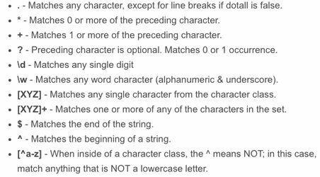
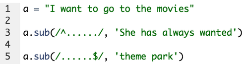
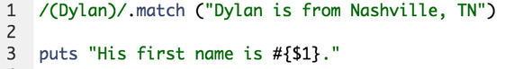

Regular Expressions
June 19, 2015
While I feel like I have learned a great deal over the past few weeks, there are still many topics that I have yet to tackle or that remain somewhat mysterious. At the top of that list is regular expressions. Regular expressions have been mentioned multiple times in the curriculum, and I repeatedly see,n them being used on forums. So, in an effort to alleviate my confusion, I have decided to do some research on regular expressions and to share my findings.
For now I will only be discussing regular expressions in the context of Ruby, but it’s important to remember that regular expressions are used in many different languages. Anyway, lets begin with a general definition of regular expressions. This is taken directly from Rubydocs. Regular expressions are used for testing whether a string contains a given pattern, or extracting the portions that match. It’s important to note that while regular expressions can be very powerful, they have a steep learning curve because of their odd syntax. To really get regular expressions under your belt, it’s worth sitting down to memorize some of the most common symbols. Here is a short from Jeffrey Way.

There are many reasons one might choose to use a regular expressions, but for today, lets mainly look at how to replace a substring with another string. I’ll start with the following example and then break down what’s happening.

On line 1 I have set variable a to equal a string. On line 3 I have called the sub method on #a, and in the parentheses I am giving specific substitution directions. The regular expression lies between the two slashes, and this is the case for all regular expressions. The first symbol in the regular expression is the carrot, and this is acting as an anchor that matches to the beginning line of the string. After the carrot there are six periods, and in reg ex these can match to anything except newline. In this case, the periods are matching to the first 6 characters in the string. The string after the comma is what I am going to sub in for the part of the string that was defined by the regular expression. If I run this it will output She has always wanted to go to the movies. On line 5 I am doing something very similar, but this time I am using the $ symbol, which acts as an anchor to the end of the string. Instead of matching to the first six characters in the string, I am now matching to the last six. Because of this, line five will output I want to go to the theme park.
Another way to use regular expressions is to capture substrings and save them as global variables. Here is what it looks like.

By putting Dylan inside of the parentheses on line 1 I has saved it as a global variable that can be interpolated with the $ symbol. This can be seen on line 3, and the output will be “His first name is Dylan."
There are certainly other ways to use regular expressions, but hopefully this gives you a good sens of how they look and how they can be implemented. Anyway, that’s all for now. Let me know if you have any questions.